1974
1974 1 jan. ärets motto är "Skyddandet av frontlinjen i den himmelska striden".
13 jan. Han bjuds in till en 'Morgonbön' med Amerikas president.
1 feb. Han möter president Nixon vid Vita Huset, och åker sedan till London.
Världen: 
Oleg Gordievsky var en rysk dubbelagent, tillhandahöll information till den brittiska underrättelsetjänsten
(MI6 & delvis CIA) från 1974 till 1985.
Två av Gordievskijs viktigaste bidrag var att avvärja en potentiell kärnvapenkonfrontation med
Sovjetunionen, när sovjeterna misstolkade NATO-övningen Able Archer 83 som ett potentiellt första anfall,
och identifierade Mikhail Gorbatjov som den Sovjetiska arvtagaren långt innan han blev framtrödande.
Faktum är att informationen som Gordievskij lämnade blev det första beviset på hur orolig den sovjetiska
ledningen hade blivit över möjligheten av ett Natos första kärnvapenanfall.
Läs boken Spion och förrädare av Ben Macintyre.
/Wiki
8 feb. Han återvänder till Korea.
12 feb. Han återvänder till Amerika.
15 feb. Officiell talarturne till 32 stöder. 'New Future of Christianity'.
mars det första 'One World Crusade Team' i Sverige organiseras av Friedhilde.
1 bil för 12 personer samt två nya tromboner, för att väcka folks uppmärksamhet köps in.
10 000 pamfletter trycks, 120 kopior av Hans Watergate Deklaration tillsammans med personliga brev sänds ut till politiker, större tidningar, teologer, professorer och kyrkoledare.
5 mars 'Little Angels konstskola' öppnas.
23-24 mars Nordiskt Seminarium i Oslo. Medlemmar från Sverige, Norge, Danmark samlas. 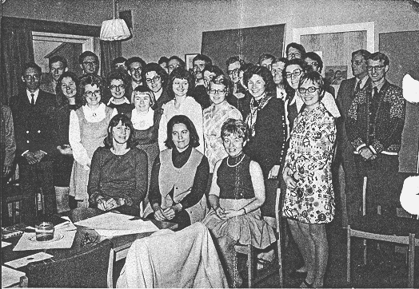
25 apr. Han återvänder till Korea.
1 maj Ceremonin för Seger över bitterhet.
7 maj 'Day of Hope' bankett i Teikoku Hotel i Tokyo.
Ett center i Uppsala etableras sommaren 1974.
Ett center i Örebro, påbörjats av Jan Peter Östberg 1974.
23 juli 40 dagars sommar witnessing.
18 sep 'Day of Hope Festival' vid Madison Square Garden i New York.
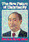 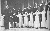 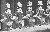 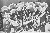 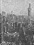 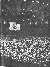 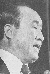 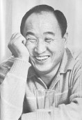 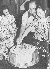 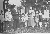 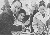
{kind=link}
{kind=link}
{kind=link}
{kind=link}
{kind=link}
{kind=link}
{kind=link}
{kind=link}
{kind=link}
{kind=link}
{kind=link}
8 okt. Han inbjuds att tala på Capitolium i Washington.
21 nov. Tredje Internationella Vetenskapskonferensen i London.
29 dec. Han återvänder till Korea via Japan.
Studiehandledning till Principerna översätts till svenska
Sanne far sa att de tre åren från 1972 till 1974 motsvarade Jesu tre år av förkunnelse, och under denna tid måste han ansluta den till världen.
1974 grundas SunMoon University i Korea.